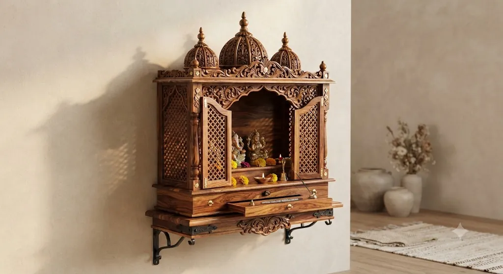
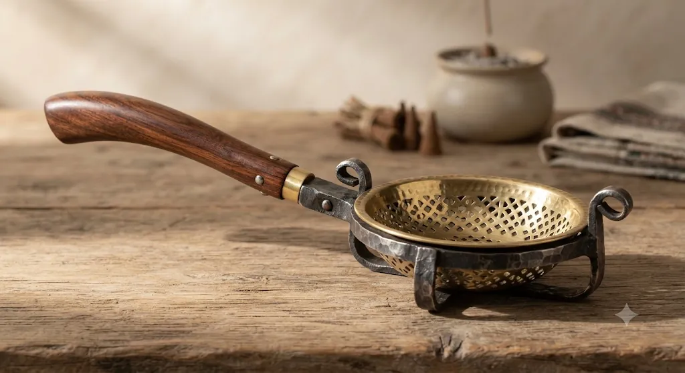
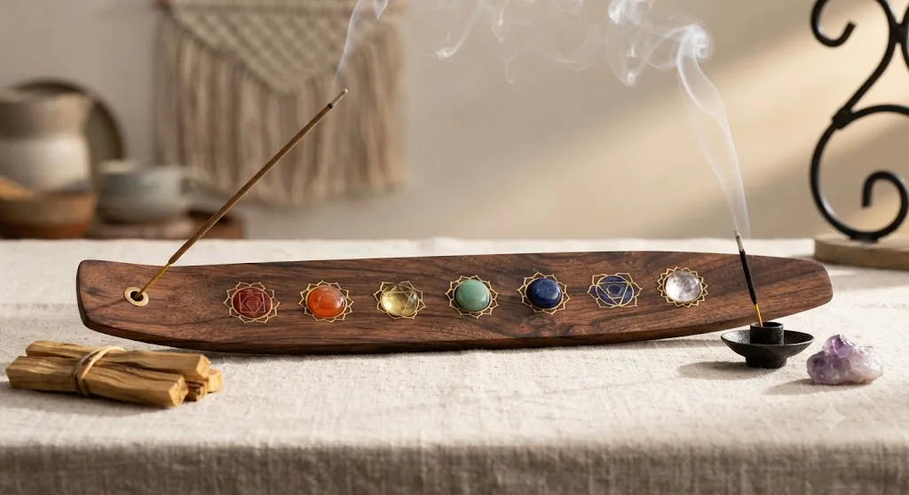
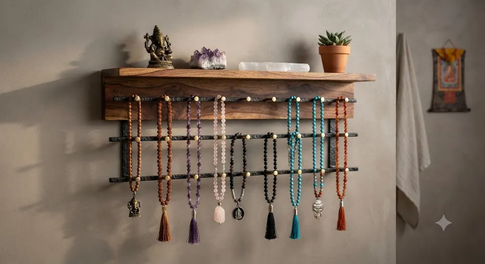
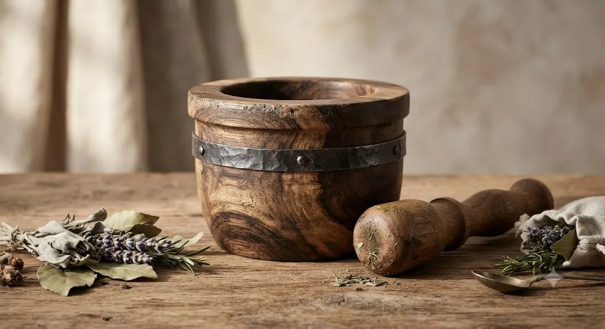
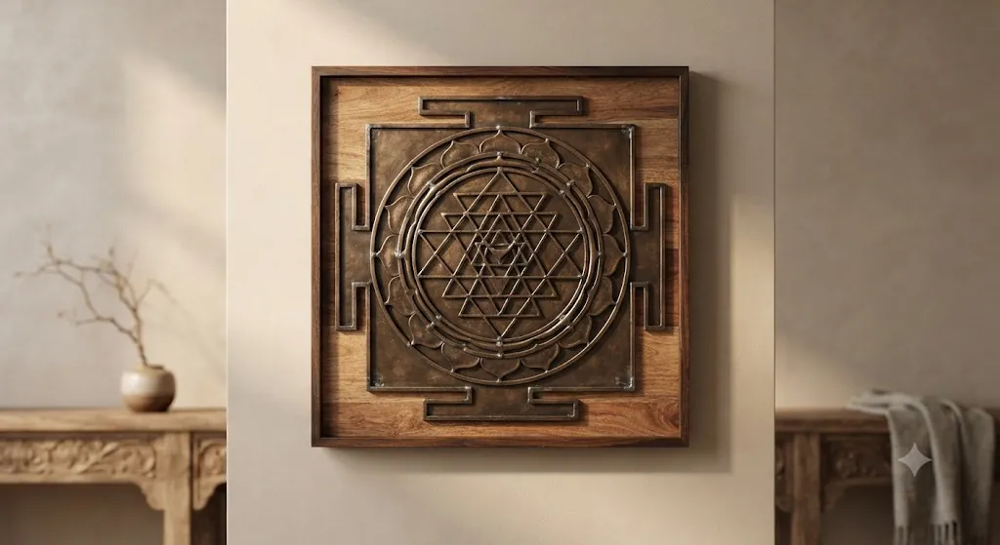

Sacred, Meditation & Altar Crafts
10 export-ready SKUs handcrafted in Jodhpur from seasoned hardwood and hand-forged iron. Priced FOB Mundra, packed for container consolidation.

Jharokha Architectural Home Mandir / ShrineAA-SP-191 · 0.120 CBM · MOQ 50 Pcs$68.00 – $88.00

Folding Ergonomic Meditation Altar Table (Chowki)AA-SP-192 · 0.015 CBM · MOQ 50 Pcs$12.50 – $16.50

Pierced Wrought Iron Incense Tower Burner (12")AA-SP-193 · 0.003 CBM · MOQ 100 Pcs$4.50 – $5.80

Turned Hardwood Tibetan Singing Bowl Stand RingAA-SP-194 · 0.002 CBM · MOQ 100 Pcs$3.20 – $4.20

Hand-Carved Wooden Buddha Face Wall Relief PlaqueAA-SP-195 · 0.010 CBM · MOQ 100 Pcs$14.00 – $18.50

Brass & Iron Dhoop Burner with Wood HandleAA-SP-196 · 0.004 CBM · MOQ 100 Pcs$5.50 – $7.20

7-Chakra Inlaid Hardwood Incense Stick Ash CatcherAA-SP-197 · 0.0003 CBM · MOQ 100 Pcs$1.40 – $1.90

Wall-Mounted 3-Tier Mala & Rosary Bead Display LedgeAA-SP-198 · 0.008 CBM · MOQ 100 Pcs$8.00 – $10.50

Turned Wood Mortar & Pestle for Sacred HerbsAA-SP-199 · 0.004 CBM · MOQ 100 Pcs$4.80 – $6.20

Geometric Iron Sri Yantra Sacred Geometry Wall ArtAA-SP-200 · 0.015 CBM · MOQ 50 Pcs$16.00 – $21.00